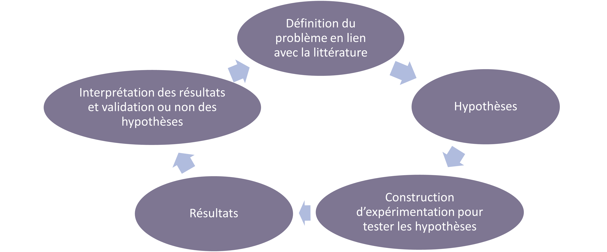
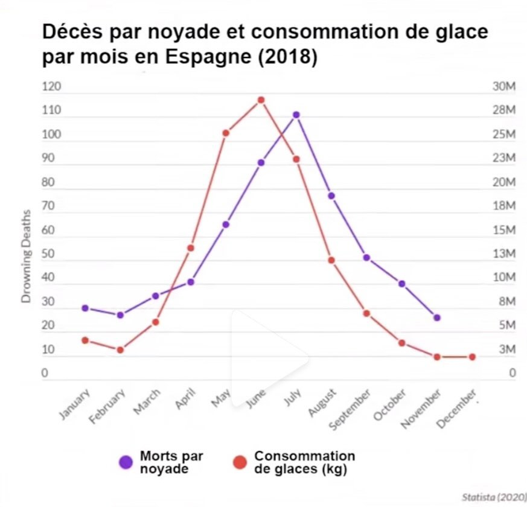

CM L1
L1 CM 2/2 - Mener une étude expérimentale, enjeux méthodologiques et éthiques
Mener une étude expérimentale
L1 - CM 2/2
Objectifs du cours
- Comprendre comment se mène une étude expérimentale en psychologie
- En identifier les enjeux méthodologiques et éthiques
- Comprendre et produire une méthodologie expérimentale
À la fin de ce cours, je dois être capable
de maîtriser la démarche expérimentale pour mener une expérimentation éthique
C’est-à-dire :
- de comprendre comment on construit une question de recherche
- revue de littérature
- insertion de la question de recherche dans la littérature existante
- présenter un raisonnement
=> Introduction
- de comprendre comment on opérationalise la question de recherche
- identifier VD et VI
- comment on construit un plan expérimental
- faire des choix méthodologiques en fonction de l’objectif de recherche poursuivi
=> Méthodologie
- de présenter des résultats
=> Résultats
- de discuter des résultats
- les confronter à la littérature existante
- les envisager de façon critique
=> Discussion
- de comprendre les aspects éthiques de la recherche scientifique et les respecter
Plan
0/ Démarche expérimentale : méthode scientifique
1/ Introduction
2/ Méthodologie
3/ Résultats
4/ Discussion
0. Démarche expérimentale
Méthode scientifique
0.1 Cycle de la recherche

0.2 Construire une recherche dans une démarche expérimentale
- La recherche s’appuie sur l’existant : réplication, réfutation, extension
- Éthique de la recherche : hypothèses avant la récolte de données
- HARKing : Hypothesis After Results are Known
0.3 Problème des hypothèses a posteriori
- Résultats trouvés par hasard : on ne confirme pas
- Risque de faux positif
0.4 Exemple
Imaginons que l’on cherche à mieux comprendre les noyades.
Notre étude fait partie d’un projet plus vaste sur les comportements estivaux.
Un jeu de données est récupéré et aggloméré.
Si on n’a pas d’hypothèses a priori et que l’on rentre toutes les données pour voir ce qui en sort …
0.5 Des données qui suivent le même motif …

0.6 Un autre exemple
Corrélation entre la distance Terre-Neptune et la surface de la forêt Amazonienne au Brésil


Source : site https://www.tylervigen.com/spurious-correlations
Qu’en dit-l’IA ?
Quand on lui demande d’expliquer ces résultats :
L'attraction gravitationnelle de Neptune a perturbé l'inclinaison de l'axe terrestre, entraînant des conditions météorologiques irrégulières en Amazonie qui ont finalement contribué à la déforestation. Comme le dit le dicton, ce n'est pas seulement une forêt tropicale, c'est un casse-tête cosmique, perturbé par Neptune, qui renverse les arbres !
Source : site https://www.tylervigen.com/spurious-correlations
0.5 Comment faire si on trouve un résultat par hasard ?
- On regarde les données et on réfléchit
- Résultat exploratoire et présenté comme tel
- Prévoir une expérimentation pour le confirmer (ou non)
0.6 Autres aspects éthiques
- manipulation de données (invention, modification, vol)
- p-hacking
0.7 Comment faire confiance à un article ?
- Utiliser les bases de données d’articles scientifiques
- validés par des experts : peer-reviewing
- Possibilité d’aller voir s’il y a des commentaires
- s’informer sur le sujet
1. Introduction
Construire une question de recherche, la présenter à travers un raisonnement et l’insérer dans un cadre théorique
1.1 Introduction qu’y trouve-t-on ?
Introduction = cadre théorique de l’étude
Structure : Raisonnement, argumentation
Angle choisi par l’auteur
1.2 Comment l’écrit-on ?
À partir d’une étude de la littérature actuelle
- Recherche de ce qui a déjà été fait sur le sujet
- Rattachement des études à un cadre théorique, parfois plusieurs –> choix argumenté
1.3 Plus concrètement
On a besoin de trouver :
- Modèles théoriques
- Recherches antérieures : quelles méthodologies ? Quels résultats ? Réplications ? Consensus ou débats ?
On utilise ce matériel pour construire notre raisonnement –> écriture de l’introduction
- Organiser les idées d’une accroche assez générale à la question précise que notre étude porte (entonnoir)
- Mettre en lien les idées \(\neq\) catalogue
1.4 Dans notre exemple de recherche
Présentation du projet
Champ de la cognition numérique
Collaboration avec Pauline Quémart, spécialiste du langage
- Question de départ : comment reconnaît-on les nombres ? Quels mécanismes cognitifs sont à l’oeuvre ?
Précision de la question
Comment reconnaît-on les nombres ? Quels mécanismes cognitifs sont à l’oeuvre ?
Quels nombres ?
- Appui sur la littérature pour faire notre choix
- Beaucoup d’études sur les chiffres
- Nombres à plusieurs chiffres : spécificité de la position des chiffres dans le nombre
Mécanismes
Comment reconnaît-on les nombres ? Quels mécanismes cognitifs sont à l’oeuvre ?
- Accord dans la littérature sur un mécanisme particulier et spatial de traitement des chiffres et des nombres à 2 chiffres
- Ligne numérique mentale
- Effet SNARC : réponses + rapides à gauche pour les petits nombres, + rapides à droites pour les grands nombres
- Activation automatique et systématique de la magnitude dans les tâches numériques (ex : comparaison, parité)
Mais …
- Activation de la magnitude n’est pas automatique pour les nombres à deux chiffres –> dépend de la tâche
- Pas de consensus sur le traitement du nombre à deux chiffres : holistique ou décomposé (dizaine/unité)
Modèle de traitement du nombre à deux chiffres
Nuerk et al. (2015)
3 niveaux de traitement de la position des chiffres chez l’adulte
- identification de la position : dizaines vs unités
- activation de la valeur de la position : 50 pour le 5 de 52
- calcul de la valeur de position : uniquement lors des calculs. Implique des modifications ou des mises à jour de la valeur et/ou de la position (ex : retenue)
Problématique
- Recherche dans le cadre le modèle théorique du traitement du nombre à deux chiffres de Nuerk et al. (2015)
- On sait que l’activation de la magnitude des nombres est automatique dans les tâches numériques
- Parallèle avec la lecture : l’activation des mots est automatique pour les lecteurs, même quand elle n’est pas nécessaire dans une tâche
- Qu’en est-il pour la magnitude des nombres à 2 chiffres quand la tâche n’a pas de caractère mathématique ? S’active-t-elle automatiquement ?
- S’il y a une activation automatique, s’agit-il de la magnitude du nombre ? Du nombre de dizaines ? D’unités ?
- Le traitement se fait-il totalement ou en partie seulement de façon automatique ?
- Le nombre est-il traité de façon holistique ou par décomposition ?
Implications concrètes
La magnitude des nombres à 2 chiffres s’active-t-elle automatiquement quand la tâche n’a pas de caractère mathématique ?
-> Choix d’une tâche de reconnaissance de nombre sans caractère mathématique
Implications concrètes
S’il y a une activation automatique, s’agit-il de la magnitude du nombre ? Du nombre de dizaines ? D’unités ?
faire varier les dizaines, les unités dans le choix des stimuli et des conditions dans lesquelles
activer le nombre entier avantage/désavantage la résolution
activer le chiffre des dizaines avantage/désavantage la résolution
activer le chiffre des unités avantage/désavantage la résolution
Implications concrètes
Le traitement se fait-il totalement ou en partie seulement de façon automatique ?
Le nombre est-il traité de façon holistique ou par décomposition ?
Décours temporel
Comment les atteindre ?
Suivre une étude expérimentale en cours : journal d’une étude en psychologie cognitive
MULTIDIGIT
Séquentialité du traitement des nombres à deux chiffres : effet d’amorçage sur l’identification de la position des chiffres et l’activation de la magnitude